本文是2021年度总结的一部分，关于我在2021年看过的ACG作品（几乎都是动画）进行一些简要的评价和讨论。
动画
一月番
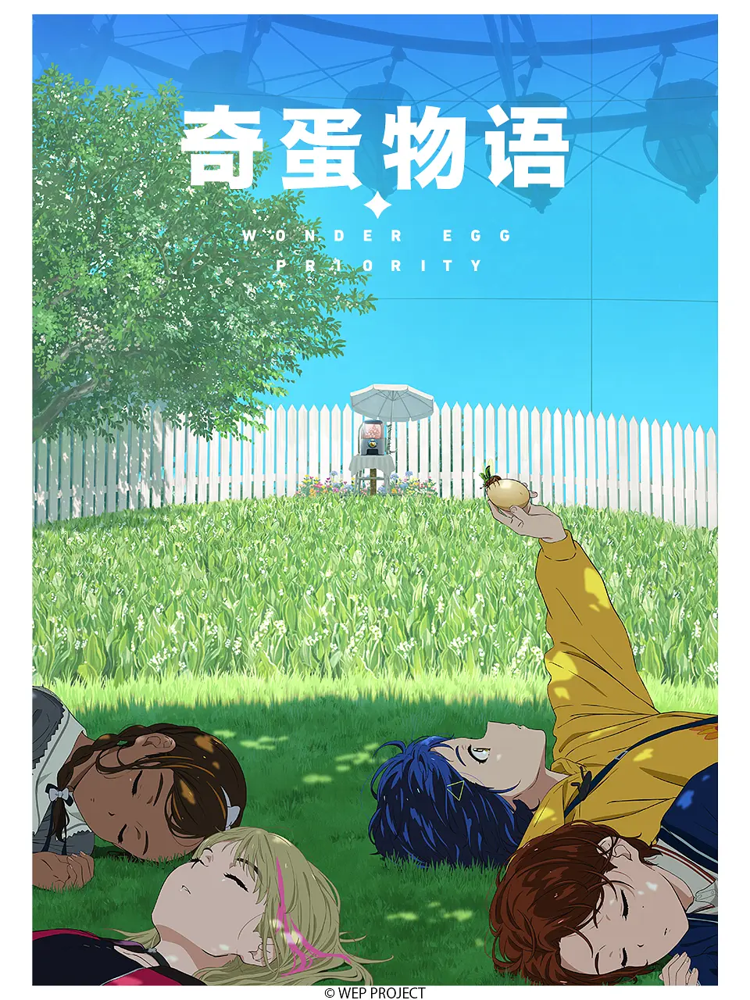
Wonder Egg Priority：只能说非常地可惜。蛋确实是让我寄予了很重的期望，从第一话就能看出来它确实是属于直戳我好球区的特别那类的：整体是如在梦境中一般的意识流演出，尤其是不同场景之间流畅又不合常理的转换和做梦有着强烈的相似，画面的色彩等元素也是十分的大胆，一整话下来的演出流畅且有足够的张力，让我看得非常之享受。之后也有3话、5话、7话、11话、12话等作为单回我认为演出十分优秀、观感非常好的回，虽然也有9话这样观感比较奇怪、割裂感严重的回，但总体来说全12话的平均水平也是相当不错的。我的关注点主要在演出上，而可惜就可惜在最后剧情写了一堆收不回来甚至没篇幅处理的东西，强行解释本没必要解释的东西去扩大设定，导致整部作品只能是不完备的甚至残缺的。虽然剧本的暴走不会破坏前面的优秀的演出带给我的好的观感，但这终究使蛋成为了一部存在这样的缺陷的动画，我只能说非常的可惜，但总体的说，虽然这很让我伤心，但我并不后悔爱过这部动画。
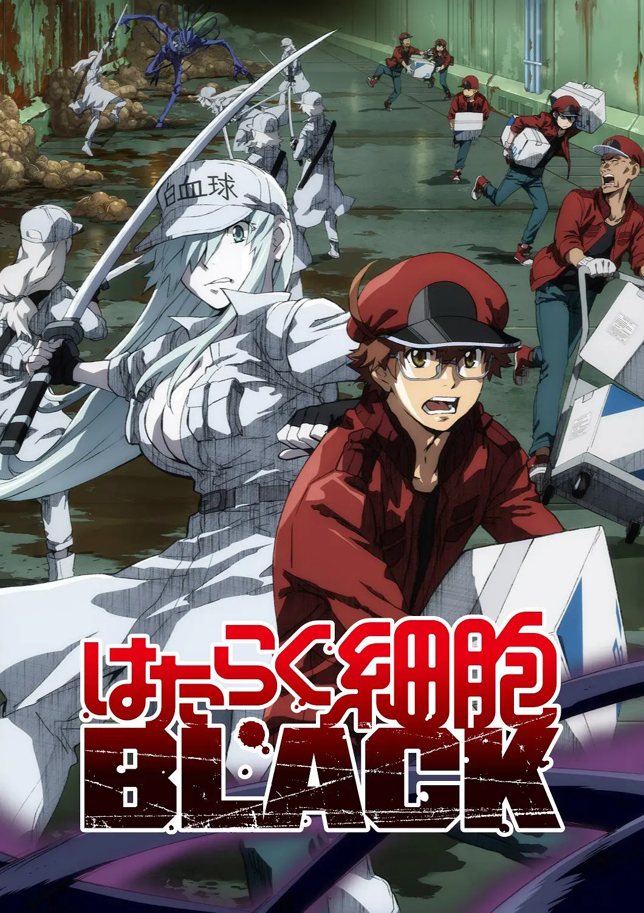
工作细胞Black：本来我是打算工作细胞第二季和Black都看的，但我发现自己看不下去前者的日常氛围了，可能是最近越来越不想看没事就撒狗粮的番或者是别的什么原因，总之我最后追下去的就只有Black了。我对这部动画整体的感觉是中规中矩，既没有什么可以说的缺陷也没什么太大的亮点，属于可以随波逐流地看下去的类型。一个重要的让它与众不同的点就是它的题材，我愿称其为现代寓言——对我这样身体素质不咋地，可能有点不那么健康的人来说没法完全事不关己地当chubbyemu视频看（虽然那我不喝酒不抽烟，片里那些病也没得过），看完还是会觉得应该对自己身体更上心一些，想来这个效果应该也是作者会希望的吧。
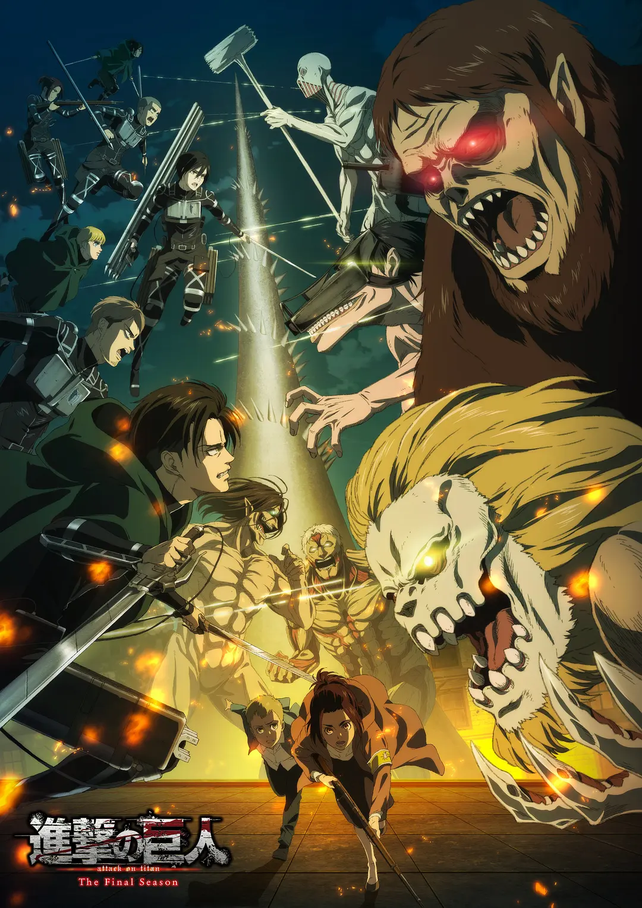
进击的巨人第四季 part1：这里暂且只说动画。第四季和之前观感上确实有些不同，不知是换了制作公司的原因还是作品整体上的风格转变，宏大叙事浓度超标的原因。我的感觉是更“硬”了，和原作漫画一致的部分更多，而没有更多适合动画的新东西在里面，因此整个观感只能说是动起来的、有声的漫画。当然漫改动画都会存在这种类似的被原作限制给不出最适合动画的表现的问题，但是有前三季这样优秀的动画化先例在，我想本是可以要求更多的。（另外，3D巨人是真滴难看）
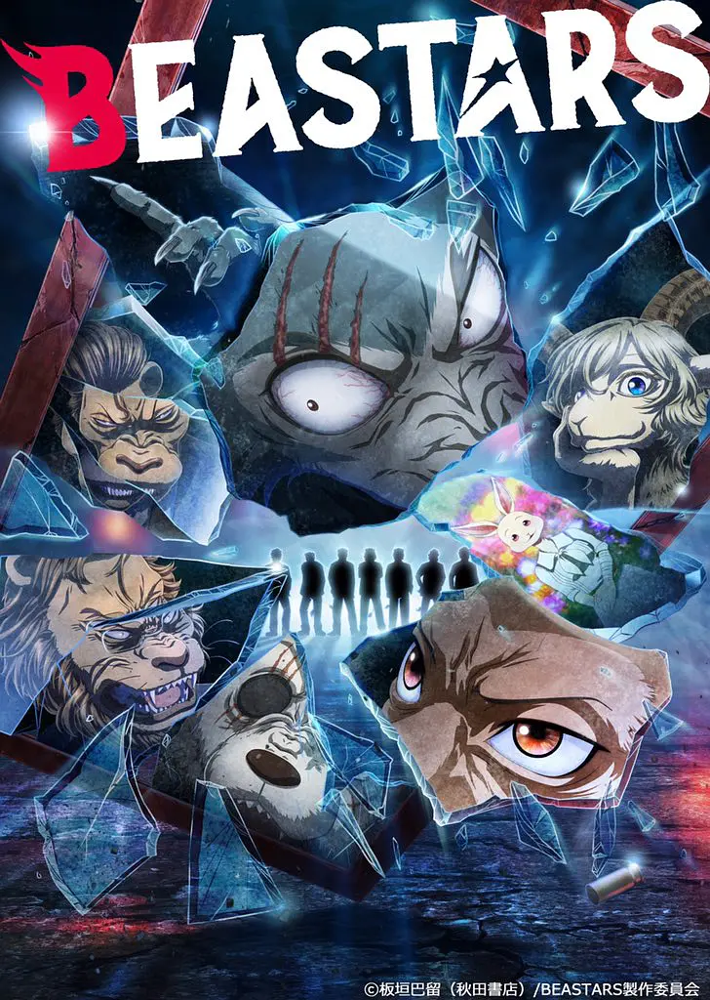
Beastars 第二季：和第一季主旋律的青春少狼的情感戏不同，第二季的重点回到食杀案之后可以看到更多只在本作的食肉食草动物共存的世界观才能存在的东西。具体的内容记不太清了，不过整体的观感是不错的。顺带一提3D的水平是真的不错，看着舒服到不觉得是3D。
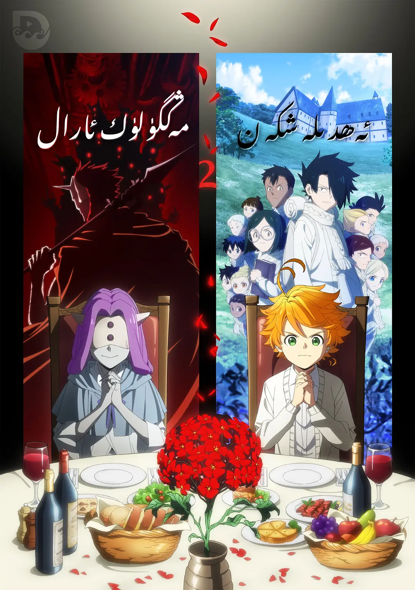
约定的梦幻岛 第二季：我曾经看过梦幻岛的原作的一部分，那时的感觉是从逃出设施开始作品整体就开始逐渐转型成超能力战斗了，给我的观感比较奇怪，大概看了几十话之后就不往下看了，因此也没看到什么在动画第二季不希望删减的部分，也因此并没有体会到原作读者对这个大幅度删减的恼火感。不过就算只考虑动画本身，第二季的观感也仍然不咋地，其原因也十分的典——非要去搞解决不了的“大”问题，宏大叙事驱使角色个人行动，推进只靠长篇大论的无聊嘴炮——真心希望少搞点这个，差不多该退环境了吧。
四月番
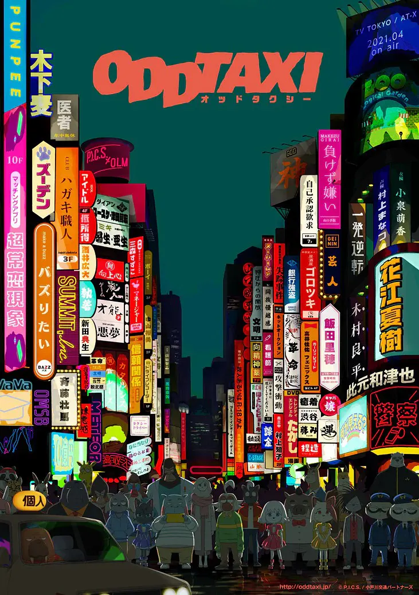
Odd Taxi：我自己管它叫做奇（ji）车。整体上来说奇车描绘的是比较现实的内容，有不少评论说它的剧本比起动画更像是一部日剧，但在表现上它又恰恰选取了最不现实的形式——即动物拟人来表现。即使最后揭露了这是因为主角小户川实际上是由于精神问题才把人看成动物，但这仍然不影响在这里之前本片的内容都是在动物的皮下演出的（顺带一提我不咋喜欢这个设定，而且就算是在剧情上看也很难说它起了什么重要意义，我的感觉是有点画蛇添足）。这正是我觉得这部动画精妙的部分，这种现实和非现实的界限被打破带来的感觉才是这部动画所独有的，也是因此它一定得是动画才行。（采用动物拟人或许也可以有人某些时候就会退化成由欲望和本能支配的动物的理解，不过我也并没有往这边想，都是现编的）
我认为奇车是属于那类可以堆一起一口气看完的动画，因为是剧情主导，两话之间停一段时间也发酵不出来什么除了毒奶以外的东西。由于它的连载时间和我赶毕业论文的时间重合，我实际上也是这么做的，在暑假回家的前一天晚上一口气看完了后一半的内容，感觉是相当舒畅的。整部中我很喜欢的是第四话“田中革命”，故事相对独立且演出力度到位，还是很戳我的逐渐走向没法回头的深渊的类型，所以感觉得到震撼。另外最终话月下飞车的名场面也是很不错的演出。
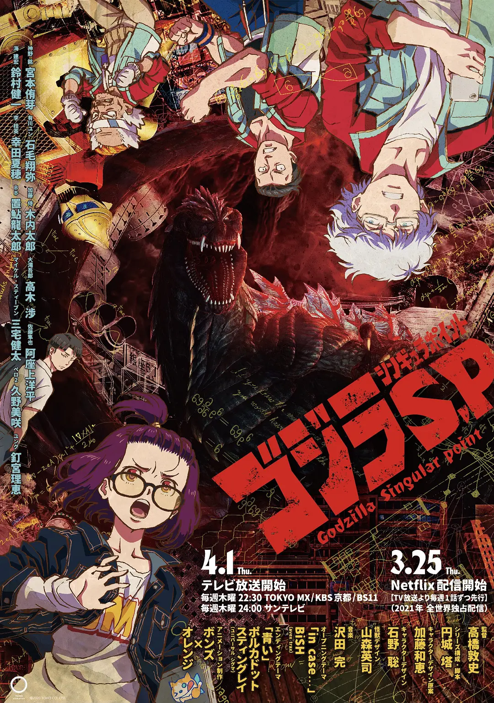
哥斯拉：奇点：科幻题材的动画不算稀缺，但奇点这样的科幻确实不常见。虽然直到最后我也看得有些莫名其妙（并不是因为我数理基础不够扎实），但不可否认奇点确实是科幻点子主导且贯穿始终的硬科幻片，而不是批一层科幻皮讲别的东西的作品。这是我个人对软硬科幻的定义，我对这两者没什么偏好，但确实二次元很少见到这种定义下的硬科幻片，但奇点是一部。另外有趣的是从一些细节（尤其是专有名词的使用）可以感受出来这部作品有真的懂物理的人参与的，而不是一看就能看出来的外行借用看起来高大上的概念瞎搞，作为半个物理人在里面能看到一堆亲切的东西，属实是双厨狂喜。不过作为动画，奇点的缺点也比较明显，关键设定和概念交代得不够显著，有的到最后都没有个解释，导致理解起来很不方便，另外故事的安排上也有很多和主题没什么关系的桥段出现，就更让人摸不到重点。很多关键信息的交代是通过男女主的聊天记录给出，作为非母语者要同时处理中日文的聊天记录文字和声音（还不一样）的四个输入信息，令我极其头大。动画本就不适合表现大量的文字，希望之后能见到更合适一点的处理。最后要说的是我开始追这部番是因为想看巨大怪兽的，但哥斯拉虽然在片名里但基本没怎么出场，有怪兽的都是和机甲战斗的场面（我不太感兴趣，而且体积小得多），所以这方面来说是完全没合上我的预期，总的来说这部动画的观感在各方面都挺奇妙的。
七月番
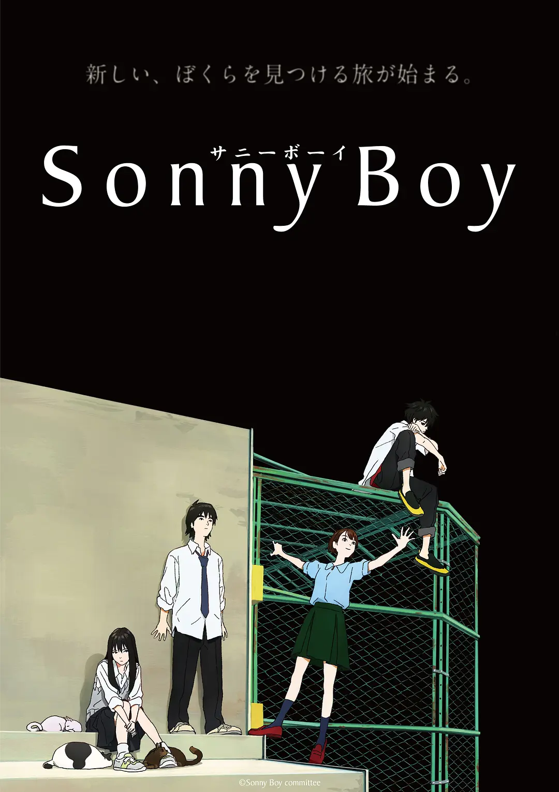
Sonny Boy：从简单的画风、色彩对比强烈的背景和几乎不使用BGM等基本的方面上就能看出是一部非常独特的作品，整体上给了我很多新鲜的体验。虽然追的过程中因为一些原因存在断层，没完全跟下来故事内容（本来就不那么容易理解），但就算这样我也体会了相当的震撼了。能感受到到是一部倾注了很多心血的作品，而且也有想要表达的东西，只可惜我在第一次并没有解读出来太多东西。过后预定会再演几遍，那时会有更多可说的东西。
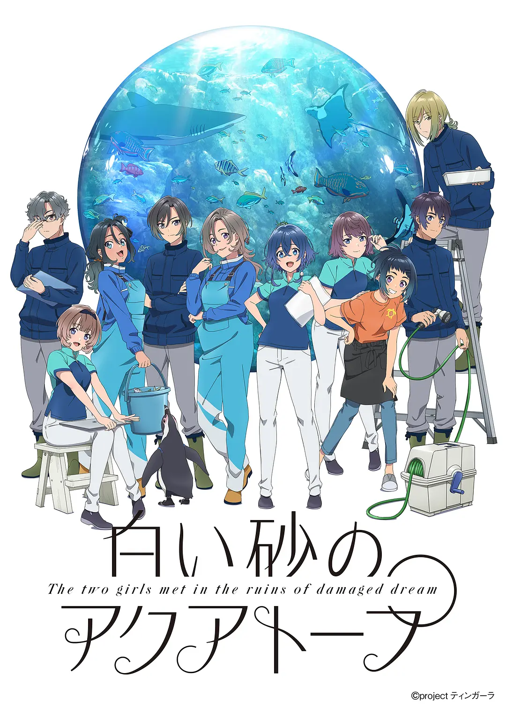
白沙水族馆：现在比较少见的半年番，前后半的感觉不太一样，分开来说。前半段给我的感觉是安静，宁静的小城、员工没几个人的小水族馆、广阔星空下的阵阵海浪声，这些令人心安的元素一起构成了这部动画令人心安的氛围，对于那段时间焦虑得不行的我是一剂良药。虽然有着要让ガマガマ存续下去的这一名义上的主线在，但由于是严格的单元剧的形式，在实际的观感上这件事并没有能起什么影响。不过同样是因为单元剧的形式，剧情上重要转折并不比别的故事能得到更多笔墨，因此也存在表达的不够到位的问题，只不过对于看个安稳的我来说平淡一点倒也没什么影响。而到后半段，随着心成为社会人，舞台转移到银河水族馆之后，我的感觉是作品的整体氛围也发生了符合角色的经历的转变。感觉上变得更躁起来了，各种事情都是草草发生草草结束，而看着也感觉不到之前的那份宁静。不知道是剧情所致还是别的什么原因，亦或是我自己躁起来了，总之观感确实存在大的不同，也因此后半段我也只看了一般半（也和学期后段时间变少有关系），不过之后应该还是会找时间看完的。
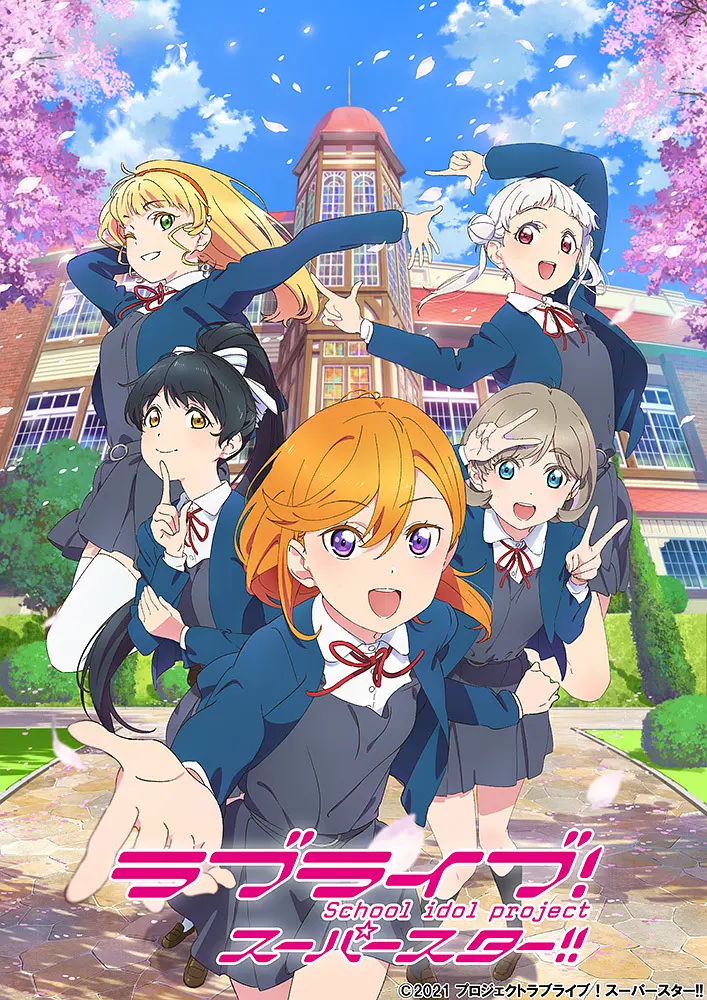
Lovelive! SuperStar!!：并不能说得上令人满意的作品。作为拉拉第四代，可以看出星有谋求一些创新，前三话的展开和之前相比还是存在一些新意的（虽然我觉得可香cp塑造得有点强行，不过整体可以说是不错的）。但到后面就越来越回到那老一套，lovelive大赛、废校危机、一话中有半话啥也不干……属实让人审美疲劳。再加上恋的剧情实在写得莫名其妙，导致整体的观感比较拉。其中唯一让我比较惊喜的是平安名堇这个角色的塑造，在B站发过动态说这个事，想说的都在那里。
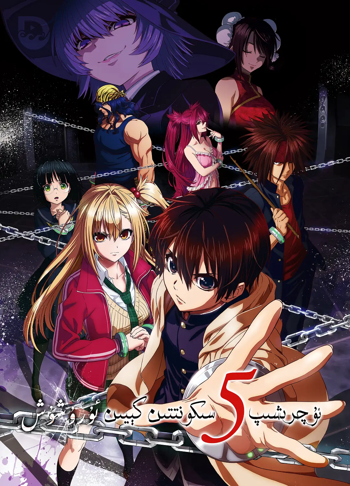
见面五秒开始战斗：大概属于十年前左右的典中典，没啥可说的。看的理由是女主声优是爱美。制作肉眼可见的贫穷，不过设定和展开还算有意思，而且没有什么雷的地方，作为消磨时间看的东西可以算是比较合格。
十月番
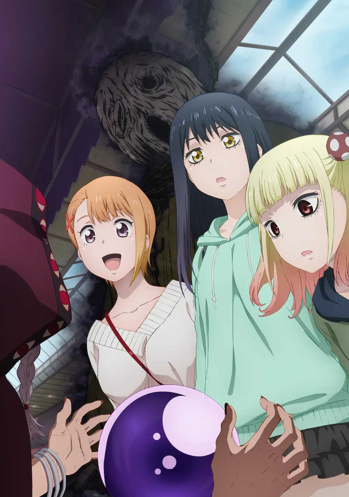
看得见的女孩：见子的漫画是我之前就在看的，挺喜欢里面画的掉san的鬼和女主很害怕但还要憋着表现出来的表情。不过动画的制作我并不太满意，一个是对鬼的处理，漫画里的恐怖是jump scare式的，而动画却会在鬼出现之前渲染一段时间氛围，这就使恐怖效果打了些折扣——因为说到底作品的风格还是偏轻松的，只会突然吓一下，而提前渲染一段最后反倒会不够吓人，观感就显得不伦不类。不过漫画的静止画面的冲击放到动画上也并不容易做出来，我也想不出什么好想法。另外是动画里做了太多福利画面了，属实是看得很没意思——我想看的是这个吗？是见子被吓哭的脸啊！不过这些缺点之外原作该有的东西都做出来了，所以大体的感觉还是可以的。年末那段时间没法拿出大块时间看动画，所以反而是见子这样边吃饭边看也没问题的片看得更多，也算是理解了这些看一乐动画存在的重要性。
剧场版动画
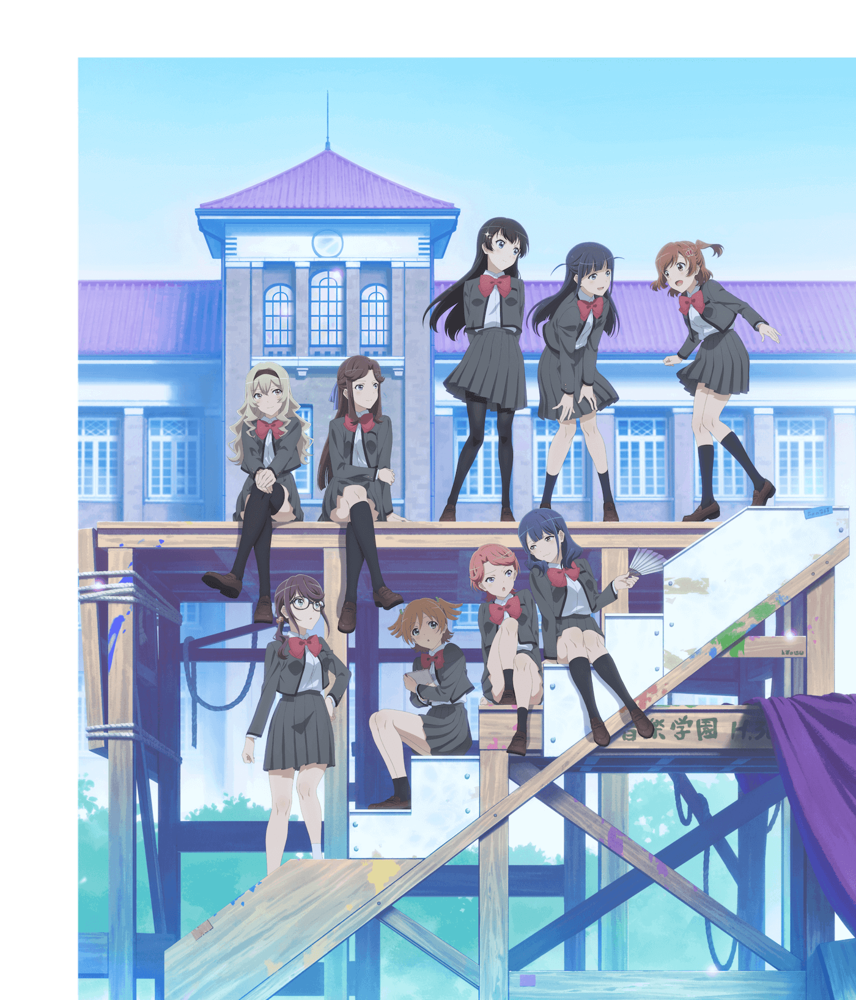
剧场版总集篇 少女歌剧 Revue Starlight Rondo Rondo Rondo：即使作为总集篇，在rororo也可以看到一定程度的新意。把12话TV压缩到两小时的总集篇，删除了revue以外的部分使节奏变得更快，同时在revue顺序的调整使得结构更加明显，可以更明显地看出starlight的故事。虽然核心的东西还是保留TV原样，但这样的调整也是呈现了另一种新的可能性。
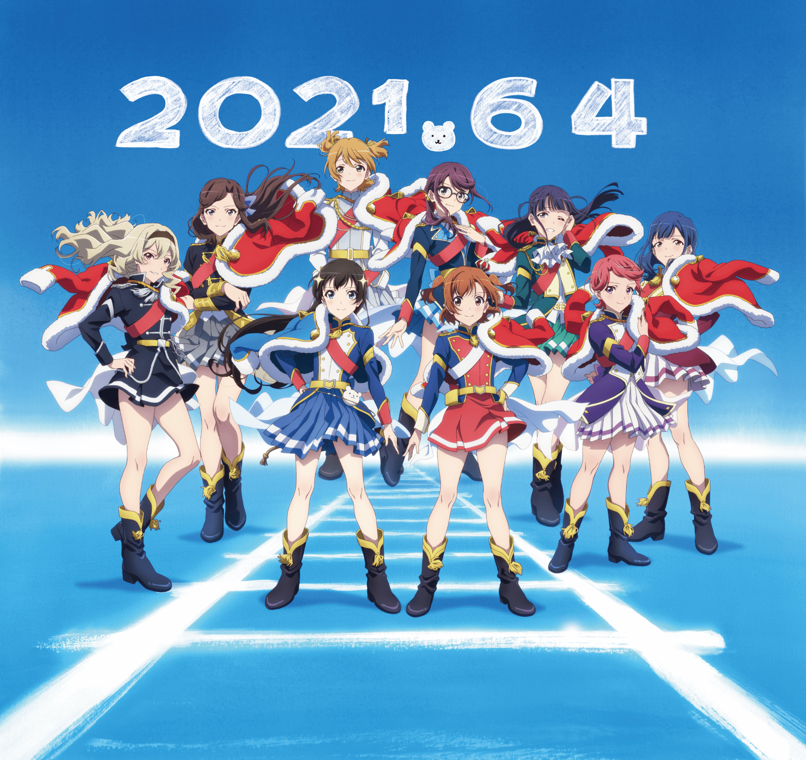
剧场版 少女歌剧 Revue Starlight：见舞台少女将站上名为自己的舞台。
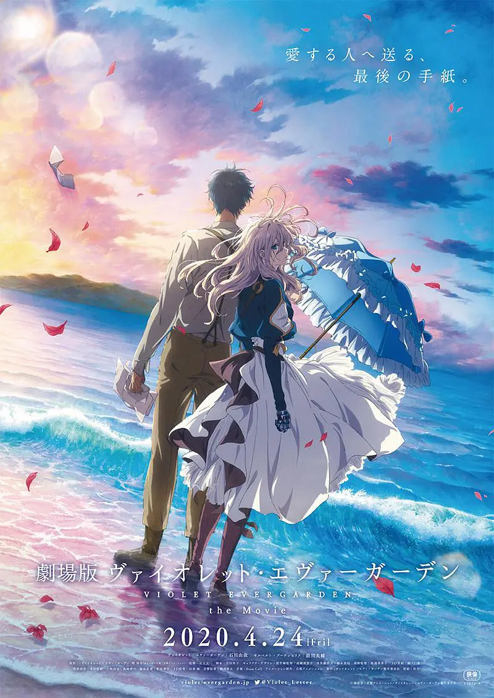
剧场版 紫罗兰永恒花园：两端没什么关联的故事拼在一起凑成了这个剧场版，但比起主线的薇尔莉特和少佐的故事却是前半段更让我动容一点。前者少佐拒绝的理由让我感觉生硬，像是强行扭出来的波折——虽然直球喂糖是容易腻，但是没有曲折还要硬扭出来就真的没必要了。
旧番
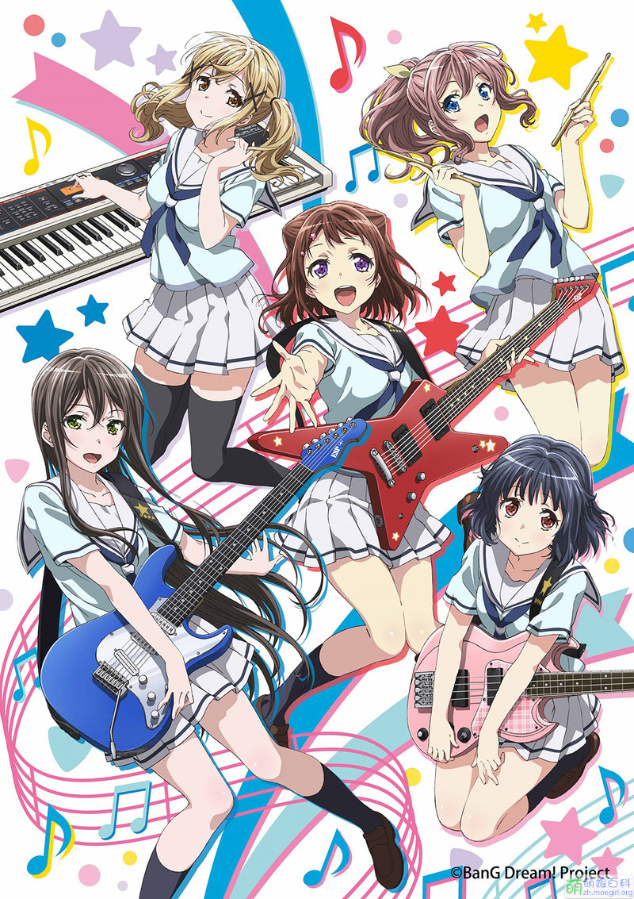
Bang Dream 第一季：寒假时闲的没事看的（因为有爱美），作为看一乐观感还是比较不错的（主要是因为爱美）。因为都是传统偶像番所以拿来和拉拉作比较，邦邦这种没什么拯救学校、大赛优胜的“大任在身”的故事相比之下就贴近现实地多，也看着更舒服一点，会让我觉得如果我有同类的经历的话那大概也就是这样的吧。毕竟观众想看的也不是这个，这些平凡又不那么平凡的日常才是真正抓人的点，这点反倒是口碑没那么好的邦邦动画更突出一点。
漫画
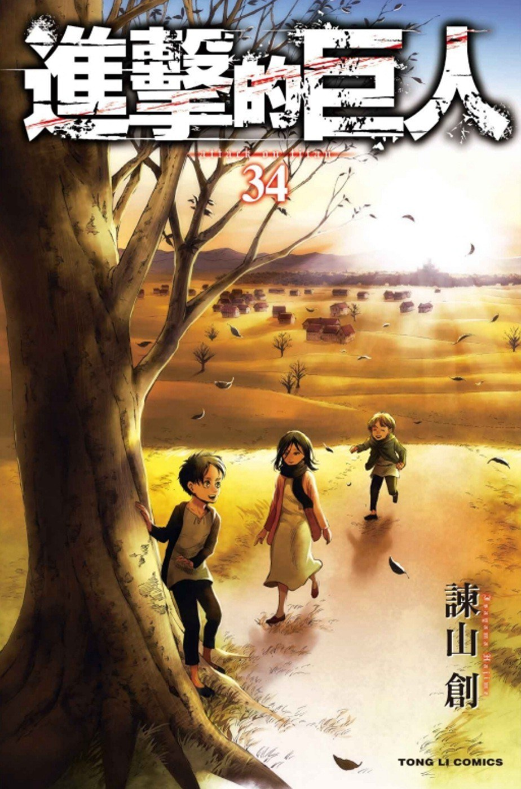
进击的巨人：乐。只论作品的话其实烂尾之前倒也都挺不错，最后也仅仅是很平常的搞宏大叙事收不回来了而已，应该说的是可惜但是还行。但结合键政人浓度超标到令人智熄的讨论环境，以及完结之后键政人180反转发表怪论的现状，我就只是觉得乐了。（有时我会想这是不是一个大型行为艺术，毕竟实际上确实是提供了这么大的乐子，如果是的话我只能说谏山创我的超人）我还是会记住巨人的，作为年轻人的最后一步宏大叙事作品，现在是该告别这类题材迎接更广阔的天空了。